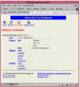

|
URLs and Databases
ACEDB: ACEDB Documentation and FAQs: AcePerl code and documentation: AceBrowser code and documentation: AcePerl access to the C. elegans data (read only): |
This issue's column is going to be a bit different. Instead of describing a neat trick or technique for Perl Web programming, I'm going to talk a bit about my own work in the Human Genome Project.
The data generated by the genome project is more complex than the type of data one usually sees in business applications. Instead of a few simple relationships between objects, biological objects are woven into a rich web of interconnections. For example, a DNA sequence contains a number of genes, each of which encodes one or more proteins, each of which has a confirmed or predicted function. The protein functions, in turn, are related to diseases, which are related to disease mapping information, which are related to genes, which are related back to DNA sequences. You can describe biological information in the familiar terms of a relational database schema, but you might not like the results. Inevitably you "fracture" the original biological objects into many small tables. Some Oracle-based genome databases use relational schemas of over 600 tables and require a database guru just to formulate and execute useful queries!
A more natural solution for storing biological data is to use an object-oriented system. In such a system, real world objects like genes and DNA sequences are mapped directly onto database objects. This makes it easier for the biologist end-users to understand the database, and it facilitates communication between the users and the database designers.

Figure 1: An ACEDB data object
There are a variety of object-oriented databases used by the genome project. The most widely used one, and the one I talk about in this column, is called ACEDB. It was written to support the sequencing of a small soil-living worm called C. elegans, a fact reflected in its name (ACEDB stands for "A C. Elegans DataBase").
However, it's now used by groups sequencing everything from barley to swine, and is the primary database used by several of the larger labs in the human sequencing project as well.
The primary authors of ACEDB are Richard Durbin and Jean Thierry-Mieg, aided and abetted over the years by a large number of volunteers and collaborators. It consists of some 250,000 lines of C code, and is available for unrestricted use and distribution under open source terms. My role in the ACEDB project has been to develop Java and Perl client APIs, as well as to develop Web interfaces to a variety of ACEDB databases. These APIs and Web interfaces are also available on an open source basis.
ACEDB can operate in single-user mode on Unix or Windows NT systems, in which case it interacts directly with users via a graphical front end. Or, it can operate as a faceless server, providing read/write or read-only access to network clients. As a database engine, the system compares favorably to mySQL and even some commercial database engines; server reliability is excellent, even when working with databases containing millions of objects.
Although there are many features of ACEDB that betray its origins as a biological database (what other database has a primitive data type called "DNA"?) there's nothing preventing it from being used for other purposes. For instance, ACEDB has been used by the quality control division of Intel corporation to store test results on chip components. For the purposes of illustration, this column uses a small database of movie films called moviedb that was generously provided by Fred Wobus of the Sanger Centre in Cambridge, England.
You can browse the moviedb database at the URL http://stein.cshl.org/perl/ace/search/moviedb, but be aware that this database is intended as a demo only. It only contains a few entries, and none of its contents should be taken too seriously. To see a real biological database in action, have a look at the C. elegans genome database, a copy of which is located at http://stein.cshl.org/elegans.html.
Figure 1 shows you an ACEDB data object from moviedb in the form displayed by a CGI script you'll see later. Every ACEDB object has a "class", which describes its data type, and an identifier called its "name." In the object shown in the figure, the class is Person, and the name is scorsese. Together the name and class uniquely identify an object in the database.
Every ACEDB object is a hierarchical tree consisting of tags and values. Some of the tags defined by the Person class are Full_name, Address, Stars_in, and Directed. To the right of each tag is either a data value, or more tags. Tags give the tree structure and serve to name portions of the subtree. For example, the subtree to the right of the Full_name tag is the single data value Martin Scorsese, while the subtree to the right of Address is a complex data type organized by the subtags Mail and Email. In ACEDB data objects, every part of the tree is potentially multivalued. The tree anchored at the Directed tag, for example, consists of five entries corresponding to the Movie objects that Martin Scorsese has directed. ACEDB data types can get more complex than this, allowing the database designer to specify a wide variety of constructed types, lists, and sets.
Listing 1 shows the complete schema for moviedb (known as "the model file" in ACEDB parlance). The schema definition language looks a lot like a set of ACEDB objects, and in fact is represented as such in the database. Classes are denoted using the notation ?Classname, tags are short string identifiers containing no whitespace, and data values are indicated using a series of reserved data type names like Text.
Capitalized directives specify attributes for certain parts of the tree. For example, in the Person class, the subtree to the right of the Full_name tag has the attribute UNIQUE followed by the data type Text. This ensures that the Full_name subtree will never have more than a single data value, and that it will be of the Text, or string, type. The tree anchored at Height is a unique integer; however the tree to the right of Phone is not tagged as unique, indicating that a Person can have multiple phone numbers (which most of these Hollywood stars do, although they're all unlisted).
Still focusing on the definition of the Person class, examine the subtrees anchored at the Stars_in, Directed, Scripted and Wrote tags. Instead of pointing to a primitive data type, these four tags all point to other constructed classes. For instance, Stars_in points to one or more Movie objects, signifying the movies that the Person has starred in. Further, the XREF attribute establishes a cross-reference relationship between two classes. For example, the Stars_in tag of the Person class is cross-referenced with the Cast tag of the Movie class. This means that whenever a new Movie is added to the Stars_in list, the Movie object's Cast list will be updated as well. A similar XREF in the Movie definition establishes the reverse relationship. The ACEDB data definition language provides a number of other features for controlling indexing and constraints.
At the bottom of the schema file is a set of subclass definitions. (Ordinarily these belong in a separate file, but I've added them to this listing for simplicity.) Unlike most object-oriented databases, ACEDB's subclassing system is entirely data driven. An object is subclassed based on its contents. The definitions given here subclass the generic Person class into Actor, Director, ScriptWriter and Author subclasses based on a Filter directive. In the moviedb database, the Actor subclass is defined as any Person who has a Stars_in tag. Similarly, the Director subclass is any Person who has the tag Directed. These are all simple examples of the Filter directive, but interestingly, a filter can be any arbitrary ACEDB query. For example, you could define a SuperStar as a Person who has starred in more than 20 movies. Another consequence of this type of subclassing is that multiple inheritance is easy and natural.
Setting up a new ACEDB database is as simple as editing the schema file with a text editor, and launching the database application from the command line. The system will ask whether it should initialize itself, and, if you confirm, it sets up an empty database. You'll then load some data as described below. At any later point you can edit the schema file and update the database by issuing the read models command. ACEDB will modify the data in-place to match the new schema, adding or removing tags as needed. This is in contrast to some other object-oriented systems where schema evolution is tricky at best.
Data can be added to an ACEDB database in several ways. One way is to use the standalone application or a remote client to load a flat file in the format shown in Listing 2. This format, which is easily generated by a Perl script, consists of each object flattened in such a way that each row of the object occupies a separate line. Blank lines separate objects. The entire hierarchy of tags doesn't have to be given, just the rightmost subtag; the ACEDB system knows how to rehydrate the tree based on the schema. ACEDB databases are commonly exported and dumped in this format, which makes it easy to transfer data from one database to another or to rebuild a corrupted database (although this is an extremely uncommon occurrence).
Another way to load data into ACEDB is to enter data graphically using various editors that come with it. A third option is to use the Perl API described in the next section to create objects programmatically.
The Perl interface to ACEDB makes good use of Perl's object-oriented features to transparently map ACEDB objects to Perl objects.Listing 3 shows a simple AcePerl script that fetches an object from a networked ACEDB server, reads a data value, and updates it. We'll walk through it a chunk at a time.
#!/usr/bin/perl
use Ace;
my $db = Ace->connect(-port => 200008,
-host => 'stein.cshl.org')
|| die "Can't connect ", Ace->error;
The script begins by loading the Ace.pm module. It then calls Ace's connect() method to connect to an ACEDB server at the indicated host and port. If the connection fails, the script dies with an error message, calling the Ace::error() method to obtain a description of the problem. If the connection succeeds, it returns a database accessor object, which we store in a local variable, $db. It is possible to establish connections with multiple databases simultaneously, and to open up both remote and local (non-networked) databases.
my $scorsese = $db->fetch(Person => 'scorsese')
|| die "Can't get scorsese object ", Ace->error;
The script now attempts to fetch the Person object with name scorsese. If it succeeds, it returns a Perl object blessed into the Ace::Object class. Otherwise the script dies with an error. This is the simplest way to fetch an object. Other ways include wildcard matches, or ACEDB query language statements, either of which can return multiple objects at once. It is also possible to create a cursor over the database in order to fetch objects one at a time in a memory-efficient manner.
my @phone = $scorsese->Phone;
The script now attempts to find Martin Scorsese's phone number by calling the object's Phone() method. Ace.pm dynamically generates Phone() and other data access methods by consulting the schema of the connected database. The returned phone number, if any, is stored in a local variable, @phone. Notice that since the Phone tag is potentially multivalued, the script uses an array to store the data. Because ACEDB objects can be quite large (some of the DNA Sequence objects are many megabytes in size), data access is done in a bandwidth- and memory-conserving manner. Unless you specify otherwise, only those parts of an object that you need are ever moved from the database into Perl.
unless (@phone) {
$scorsese->add(Phone => '501 555-1212');
$scorsese->commit || die "Can't commit ", Ace->error;
}
If the list of phone numbers is empty, the script updates the Phone tag by adding a new value. It then attempts to commit the change to the server.
Although the host and port given here are real ones, this script won't work in your hands because the host is behind a firewall. If you wish to experiment with ACEDB, however, you can connect to some of the publicly-accessible read-only servers for DNA sequencing data provided at the beginning of this article. A variety of demo scripts come with the AcePerl package.
The Perl representation of ACEDB objects has many more methods than the few shown in this sample script. Among other things, it is possible to navigate through objects without advance knowledge of the database schema. For example, you could obtain the list of top-level tags in the $scorsese object in this way:
@tags = $scorsese->tags;
Then you could fetch and print the contents of these tags one by one:
foreach (@tags) {
print $scorsese->get($_);
}
Other methods allow you to determine the type of each node of the object tree. In this way you could detect which nodes of the tree were subtags, and recurse on them. In fact, built-in methods do just this to transform ACEDB objects into various text and HTML representations.
Some ACEDB subtrees are actually pointers to other database objects. When you retrieve such subtrees, you obtain lists of Ace::Objects which will perform further database accesses when necessary. For example, here's how to find the titles of all the movies that Martin Scorsese has starred in:
my @movies = $scorsese->Starred_in;
for my $movie (@movies) {
print $movie->Title;
}
And here's a way to find all Scorsese's coauthors for screenplays:
my %coauthors;
for my $movie ($scorsese->Scripted) {
foreach my $author ($movie->Writer) {
$coauthors{$author}++ unless $author eq 'scorsese';
}
}
If you are looking carefully, you'll notice an interesting bit of magic in the fourth line. The Perl string operators are overloaded in the Ace::Object class allowing you to compare ACEDB objects to strings in a natural way. You can also print out objects and incorporate them into strings. During string interpolation, the object reference is replaced with its ACEDB object name.
Because ACEDB keeps its objects intact, it's very easy to move objects from one database to another. Provided that their schemas are compatible, you can move an object from database A to database B as easily as this:
my $object = $databaseA->fetch(.....); $databaseB->put($object);
Recently I've been writing Perl modules for making ACEDB databases available for Web browsing. These modules, collectively called AceBrowser, sit on top of AcePerl and consists of several parts. There's a utility module called AceSubs.pm that exports a variety of useful functions for displaying ACEDB objects on HTML pages, and handles such things as making the ACEDB client-server connection persistent. There's a series of CGI scripts that display objects in different ways. There are both schema-independent displays, such as the generic tree browser shown in Figure 1, and schema-dependent displays, such as those that display DNA Sequence and Protein objects. Then there are several types of search pages, which again come in schema-dependent and schema-independent groups. Finally, there's a configuration file that contains site-specific definitions for what databases should be made available to the Web and how to connect to them. This configuration file also implements a simple object registration system that associates ACEDB object classes with the CGI scripts that display them.
Out of the box, AceBrowser supports two different generic views on ACEDB objects. There's the tree browser, tree, which produced Figure 1. It is smart enough to collapse subtrees that are too long to display on a single page, and turn their tags into links that expand and collapse the subtree like the outliners of word processor programs. It is also capable of recognizing ACEDB object references and turning them in links into the appropriate CGI script.
Then there's a graphical browser named pic. The pic display asks the ACEDB server to return the graphical representation of the object. Several ACEDB classes have special display methods on the server side that allow biological objects like sequence maps and clones to be graphed. The pic script takes advantage of this ability by turning server-generated graphics into clickable image maps. pic isn't particularly useful for the moviedb database since it doesn't have any special graphical representations. However, I've kept this script associated with the moviedb database in case someone decides to add pictures of the cast or MPEG trailers to the database.
The tree display is useful for debugging and development, but the raw ACEDB hierarchical tree view isn't particularly attractive. For that, you need schema-dependent views that reformat data objects into nice HTML pages. Listing 4 shows a CGI script named person, which displays a Person object. Figure 2 showed a screenshot of this script's output, which we'll walk through now.
use strict; use vars '$DB'; use Ace 1.51; use AceSubs; use CGI 2.42 qw/:standard :html3 escape/;
The script begins by turning on strict syntax checking and importing routines from Ace.pm. It also loads up handy subroutines defined by the AceSubs.pm module of the AceBrowser system, and imports various symbols from the CGI.pm module. A variable named $DB is declared global for use as the database handle.
AceInit();
$DB = OpenDatabase() || AceError("Couldn't open database.");
AceHeader();
AceInit() is defined by the AceBrowser subsystem, and does some internal variable initialization. OpenDatabase() is another AceBrowser call; it consults the configuration file to determine which database to open and attempts to open it; the returned handle is stored in $DB. The name of the database is actually derived from the additional path information of the script URL. If this script were installed as /cgi-bin/ace/person, then calling it as http://your.site/cgi-bin/ace/person/moviedb, would tell the system to open the "moviedb" database. These URLs are ordinarily generated internally by AceSubs--you don't have to worry about it.
AceHeader() prints out the HTTP header and the top HTML boilerplate defined in the configuration file.
my $person_name = param('name');
my ($person) = $DB->fetch(-class => 'Person',
-name => $person_name,
-fill => 1
) if $person_name;
The script looks for a CGI parameter named name. If present, it calls the Ace fetch() method to retrieve the named Person object. This is a slightly longer version of the fetch() method than we saw previously. The motivation for this is to use the -fill argument, which indicates that the entire Person object should be fetched in a single operation. Since the Person class is a relatively small one, it is more efficient to do the fetch in a single operation rather than a bit at a time as per default.
print_top($person); print_warning($person_name) if $person_name && !$person; print_prompt(); print_report($person) if $person; print_bottom(); exit 0;
The script now prints out the top of the HTML page and a warning if the requested Person does not exist in the database. It then prints out a textfield that allows the user to directly request another Person object without returning to the AceBrowser search pages. The print_report() function prints out a short report on the requested Person object, and print_bottom() prints out some bottom boilerplate. The script exits at this point.
sub print_top {
my $person = shift;
my $title = $person ? "Bio for $person" :
'Moviedb Person Report';
print start_html (
'-Title' => $title,
'-style' => Style(),
),
HEADER,
TypeSelector($person, 'Person'),
h1($title);
}
sub print_bottom { print FOOTER; }
The print_top() and print_bottom() functions are responsible for the top and bottom boilerplate of the HTML page. Most of this is self explanatory, except for a few calls into the AceBrowser system. Style(), defined in AceSubs.pm, returns a stylesheet for the page, based on settings in the configuration file. HEADER and FOOTER are constants derived from other definitions in the configuration file; they are responsible for the banner at the top of the page and the various links and attributions at the bottom.
TypeSelector(), defined in AceSubs.pm, produces a navigation bar for the object. It creates a row of icons at the top of the page which allow the user to navigate to the search pages, or to various alternative displays for the object. In Figure 2, we are showing the Biography display generated by the current script. Alternative displays include Tree Display generated by tree, and Graphic Display generated by pic. Some of the more complex biological objects have half a dozen alternate displays available.
sub print_warning {
my $name = shift;
print p(font({-color => 'red'},
"The person named \"$name\"
is not found in the database."));
}
sub print_prompt {
print
start_form({-name=>'form1',
-action=>Url(url(-relative=>1))}),
p("Database ID",
textfield(-name=>'name')
),
end_form;
}
The print_warning() and print_prompt() functions use CGI.pm methods to create HTML fragments. print_warning() is called when the requested Person object is not found in the database, producing a nice red error message. print_prompt() produces a tiny fill-out form containing a single textfield named name. The user can type in the name of a new Person object in order to display a new database object.
sub print_report {
my $person = shift;
print h2($person->Full_name);
The print_report() function is where the object is actually displayed. The function begins by shifting the Person object off the subroutine stack and storing it in a local variable. It then calls the object's Full_name() method, and incorporates it into a level 2 header.
if (my @address = $person->Address(2)) {
print h3('Contact Information'),
blockquote(address(join(br,@address)));
print a({-href=>'mailto:' . $person->Email(1)},
"Send e-mail to this person" if $person->Email;
} else {
print p(font({-color=>'red'},
'No contact information in database'));
}
The next step is to print out the Person's address. This section takes advantage of an ACEDB feature that we haven't seen yet. Subtrees are often structured so that higher-level tags indicate generic attributes while subtags indicate more specific ones. In the Person object, the Address tag anchors a subtree of address attributes, and the subtags Mail, Phone and EMail indicate specific types of addresses. We could generate the address by calling Mail(), Phone(), and EMail() explicitly, but what would happen if the schema later evolved to contain a new subtag named Fax? In many cases, what we want to do is to jump two steps to the right of the generic tag and retrieve all the lines in the column we find there. The data access methods allow this to be done easily by accepting an optional numeric argument, which specifies an offset from the tag into the data. Address(2) retrieves all the data two steps to the right of the Address tag. We incorporate these lines into a <BLOCKQUOTE> section and print it out.
If the Person has an email address, we turn it into a mailto: link. Note that we call Email(1) here, explicitly stepping one data element to the right of the Email tag. This is because the data access methods have slightly different behaviors in scalar and list contexts. In a list context, data access methods return the column of data to the right of the tag (unless modified by a numeric value). This is the form we've previously seen. In a scalar context, data access methods return a reference to the tag itself. This allows constructions like $person->Address->Email to work the way you'd expect. When in doubt, it's safest to give an explicit offset.
if ($person->Born || $person->Height) {
print h3('Fun Facts'),
table({-border=>undef},
TR({-align=>'LEFT'}, th('Height'),
td($person->Height(1) || '?')),
TR({-align=>'LEFT'}, th('Birthdate'),
td($person->Born(1) || '?'))
),
}
If either the Born or Height field is defined, the script prints out a table titled "Fun Facts" and prints the information. If one of these fields is missing, a question mark is printed instead (moviedb has a notable shortage of fun facts).
if (my @directed = $person->Directed) {
print h3('Movies Directed');
my @full_names = map { a({-href=>Object2URL($_)},
$_->Title) } @directed;
print ol(li \@full_names);
}
This section prints out a list of the movies that the Person has directed, if any. It calls the Directed() method to recover a list of Movie objects. If not empty, the code turns them into a series of links by calling the Object2URL() function defined in AceSubs.pm. Object2URL() consults the object registry given in the configuration file, and turns it into a URL that links to the appropriate display script. We could use the Movie object's name as the link, but it is more elegant to dereference the object and recover the movie's full title for use in the link text. If using the raw database name in the link text were appropriate, we could shorten the code a bit by using the AceSubs.pm ObjectLink() method:
my @full_names = ObjectLink(@directed);
The movie links are then incorporated into an ordered list.
if (my @scripted = $person->Scripted) {
print h3('Movies Scripted');
my @full_names = map { a({-href=>Object2URL($_)},
$_->Title) } @scripted;
print ol(li \@full_names);
}
if (my @stars_in = $person->Stars_in) {
print h3('Starring Roles In');
my @full_names = map { a({-href=>Object2URL($_)},
$_->Title) } @stars_in;
print ol(li \@full_names);
}
}
We do the same thing for movies that the Person has scripted, and for movies that the Person has starred in. It's left as an exercise to the reader to turn this bit of repeated code into a common subroutine.
The last thing that remains to do is to register "person" and "movie" with the AceBrowser object registration system. This allows the system to automatically generate the right object reference URL when Object2URL() is called, and provides a navigation bar containing a list of alternative object displays when TypeSelector() is called. Unfortunately unlike the rest of the system, the object registration code is in an incomplete state of evolution. Although functional, it is unsightly and will be replaced by a more elegant object-oriented approach in the near future.
All object registration information is contained in a site-wide file called SiteDefs.pm. In addition to registration information, it contains a variety of defaults and user preferences. An excerpt of the relevant sections of my site's SiteDefs.pm file is given in Listing 5.
%DATABASES = (
# deleted stuff...
'moviedb' => {
host => 'localhost',
port => 200008,
stylesheet => '/stylesheets/moviedb.css',
searches => [qw(search grep query)],
url_mapper => \&movie_mapper,
displays => \%movie_displays,
title => '<center><span class="banner">
Moviedb Test Database</span></center>',
},
);
The %DATABASES hash contains a list of all the databases that should be made visible to the Web interface. Each database has a symbolic name, used as the hash key, and an anonymous hash containing attributes of the database, used as the hash value. In this example we only show a single entry, the moviedb database. The anonymous hash contains keys describing the host that the database lives on, its port number, a stylesheet to use for displaying pages from this database, a list of search scripts to be made available for this database, and a title to display at the top of each of the pages. There are also two keys named url_mapper and displays that tell the system what CGI scripts are to be made available for displaying objects fetched from the database.
sub movie_mapper {
my ($display, $name, $class) = @_;
my $n = escape($name);
return ('person' => "name=$n") if $class eq 'Person';
return ('movie' => "name=$n") if $class eq 'Movie';
# fall through
return basic_mapper($display, $name, $class);
}
The movie_mapper() subroutine, referred to by the %DATABASES hash, defines how object links are turned into URLs for the moviedb database. The subroutine takes three arguments: the name of the current script (e.g. tree), the name of the object, and the class of the object. It returns two arguments: the URL of the CGI script to use to display the object (e.g. movie), and the URL-escaped arguments to pass to the script. In this case, the logic is to turn references to Person objects into links to a CGI script named person, and similarly to turn references to Movie objects into links to the movie script. Other classes, for example the Book class, will fall through to the basic_mapper() routine, which defines the default behavior of using tree and pic as the generic displays.
%movie_displays =
(
Person => [
{'url' => 'person',
'label' => 'Biography',
'icon' => '/icons/quill.gif'},
],
Movie => [
{'url' => 'movie',
'label' => 'Movie Report',
'icon' => '/icons/movie.gif'},
],
);
The last bit of the SiteDefs.pm file defines the alternative representations for each object that will be displayed in the TypeSelector()-generated navigation bar. %movie_displays is a hash whose keys are object class names, and whose values are anonymous arrays containing lists of alternative representations. In the simple moviedb database, Person and Movie each have one representation; in a more complex application, multiple representations can be defined.
Information about each display is given as a hash in which the url key indicates the URL to call to display the object, label indicates a short descriptive string to print on the navigation bar, and icon gives the URL of the icon to display above the label.
Working with ACEDB is fun and easy because you're working with whole objects at a time, not bits and pieces of them. AceBrowser allows you to take any ACEDB database and make it browsable without writing a line of code, or to create customized data reports quickly and easily. The next time you're using DBI to fetch one row one at a time from a relational database, pause for a moment to reflect. Wouldn't you rather be doing this job the genome way?
__END__
Lincoln D. Stein is the author of CGI.pm.
{kind=link}
{kind=link}